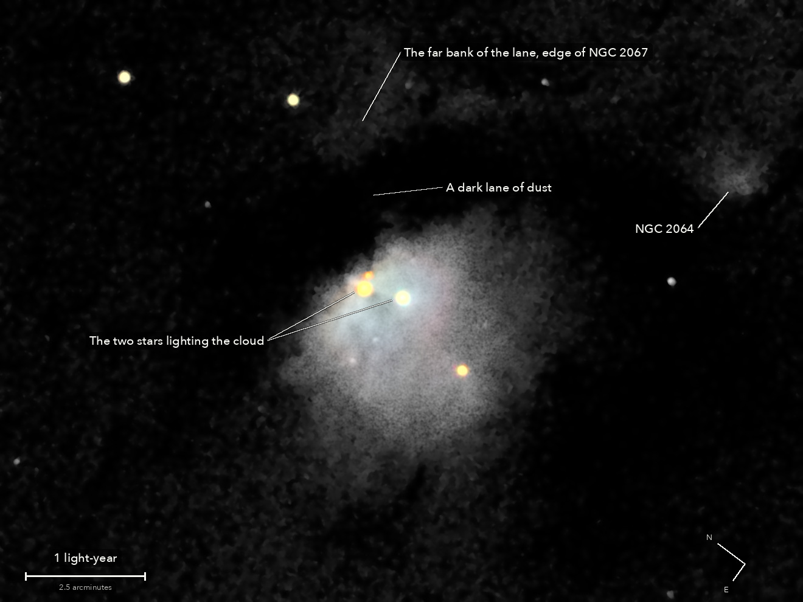

Messier 78
A cloud of dust in Orion, lit by the stars inside it
This cloud does not shine by itself. It is dust, lit by the young stars inside it the way fog glows round a street lamp, and it is bluer than its stars for the same reason the daytime sky is blue. The black band above it is more of the same dust, unlit. It is one of the brightest clouds of its kind in the sky, and part of the great cloud where Orion's stars are being born.
What you are looking at

Swipe sideways to see the rest. Tap the picture for full size.
- Distance
- About 1,350 light-years
- This picture spans
- Nearly 7 light-years; the glow shown is about 2 across
- The light left
- Around the year 680, when the Maya were building their great cities
- Honest note
- The cloud measures bluer than the stars that light it, but that is only a cool white beside them, and no colour was added to make it blue. Its faint outer parts are not shown
For photographers
8.5 minutes of light on one field; no frame trailed.
- Exposures
- 34 x 15 s at ISO 3200: 8.5 minutes
- Frames
- 36 taken, 34 kept. The first after the slew was dropped by rule, and the last, whose stars had widened to 6.6 arcsec. None trailed. In the last four frames the stars widened and dimmed together, which is what dew starting on the telescope's front plate does; thin cloud is the other reading. Until then the stars' brightness was steady within 5 percent
- Sampling
- 0.777 arcsec per pixel: one pixel per 2 x 2 colour cell, never enlarged. Stars 5.5 arcsec wide (half-flux) in the stack; 5.2 to 5.7 over most of the run
- Field
- 17.1 x 12.8 arcmin: a 1320 x 990 crop from a stack of 38.6 x 25.4 arcmin, nothing resampled, not turned (north 54 degrees anticlockwise of up). NGC 2071, 14 arcmin away, is real in the full field and outside this crop
- When
- 13 October 2026, after midnight, over 23 minutes. About 45 degrees up
- Registration
- Rotation and shift on 22 or 23 stars (a field in a dark cloud has few), 0.33 to 0.59 sensor px rms; the field turned 0.54 degrees. The air spread red from blue by 0.57 arcsec: measured on the stars and taken out in the one resampling
- Calibration
- No darks and no flat frames were taken. The night's flat, built from the open sky of the NGC 891 run, and 75 dust shadows it left, measured on this run's own sky and divided out. Hot pixels from the run itself
- Stacking
- RAW colour planes (no demosaic), hot pixels by 3 x 3 median, registered on stars with rotation, sigma-clipped weighted mean. One sky constant per colour per frame; in the picture only, a sky plane per colour is subtracted as well. Noise 5.1 to 5.5 times lower than one frame (5.8 expected from the weights)
- What is real
- Each of these repeats in the odd and the even halves of the frames. The glow round the two stars, 20 times the scatter of blank sky. The dark lane to the north-west: its far bank stands above it at 8 sigma. The arc beyond the lane, the edge of NGC 2067. NGC 2064, small and faint, at 16 sigma. Above the sky the glow is 5.4 arcmin east to west by 4.5 north to south; the catalogue gives 8 x 6
- Known flaws
- The sky under the nebula is probably a little too high (the dark lane reads slightly below zero), so the nebula's faint edge is trimmed. A short dark streak at the nebula's southern edge is a dust shadow that could not be measured there: it was left, not painted out. Some of the light within 20 to 40 arcsec of the two stars is the telescope's own spread of starlight
- Colour
- No saturation added. In the camera's daylight white balance the bright body is red : green : blue 0.98 : 1 : 1.01, a cool white; the two stars that light it are 0.83 and 0.63 in blue over green. So the nebula is bluer than the bluer of its stars, by 4.2 sigma, which is what scattering by dust does; against white it is neutral. No colour is shown in the faintest parts
- Finish
- The camera's daylight white balance and colour matrix. Arcsinh stretch, black at the 70th percentile, S-curve 0.15. The dark sky is set near black and smoothed (median 5 px, bilateral 5 px), by choice: 14 percent of the picture is exactly black, and the faintest edge, the arc and NGC 2064 are smoothed with the sky
- Telescope
- Celestron 8SE Schmidt-Cassegrain: 203 mm aperture, 2,081 mm focal length by plate solve of this stack, f/10.3
- Camera
- Sony a6000, stock, at prime focus: APS-C 23.5 x 15.6 mm, 6000 x 4000, 3.9 micron pixels, RAW
- Mount
- Sky-Watcher EQ6-R, unguided. Set down without polar alignment, about 5 degrees off the pole; aligned from four plate-solved photos (about 1 arcminute), both axes driven from that model
© 2026 Brad Gessler · Celestron 8SE (8 inch, f/10.3) and Sony a6000 on an EQ6-R · San Francisco Bay Area · night of 12 October 2026
Capture and mount: Observatory (Elixir on a Raspberry Pi 3). Stacking: numpy, OpenCV, rawpy. Plate solving: astrometry.net. Stacked from the camera's RAW frames. Nothing generated.
© 2026 Brad Gessler. The pictures and the words are his own; all rights reserved.